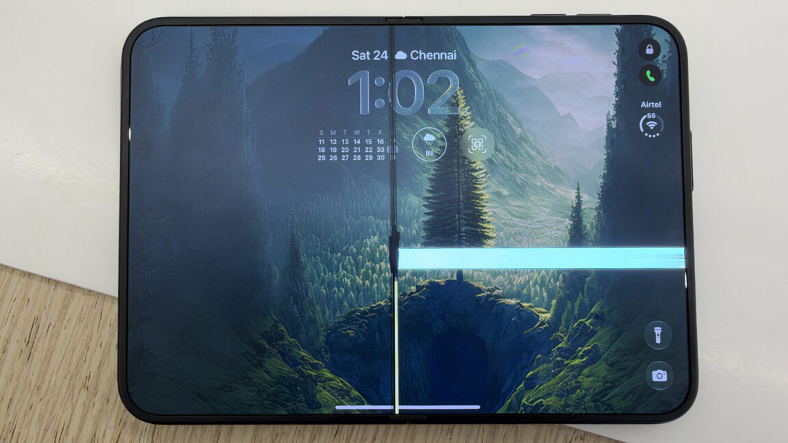

Technology · 27 Oct 2026
Some iPhone Duo screens are already failing

Apple's "precision-engineered" hinge is apparently damaging some iPhone Duo screens.
Multiple independent publishers are reporting on the same development: Some iPhone Duo screens are already failing.
The available reports place the development in the Technology category. The accounts were compared for agreement on the central event rather than simply shared names or broad topics.
One of the available reports describes the development this way: Apple's "precision-engineered" hinge is apparently damaging some iPhone Duo screens.
Readers should consult the linked source reports for additional context, updates and details that may change as the story develops.
Sources
This article was produced by the C. O. Eric AI Newsroom from the cited sources. It is published only after automated evidence and safety checks.